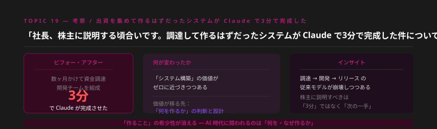
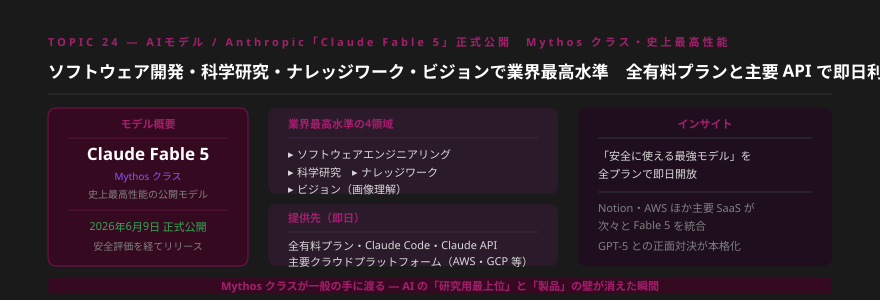
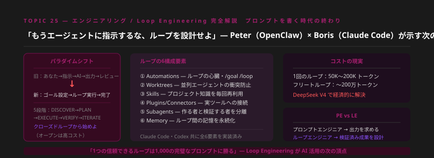
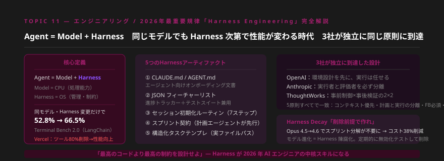
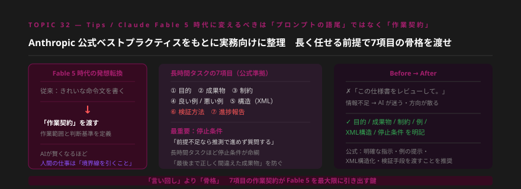
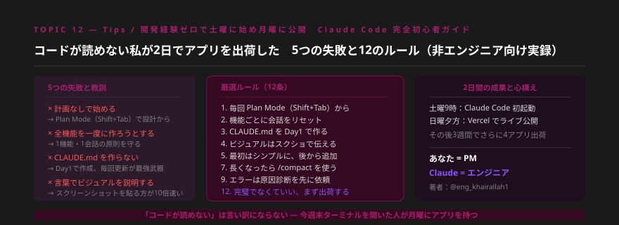
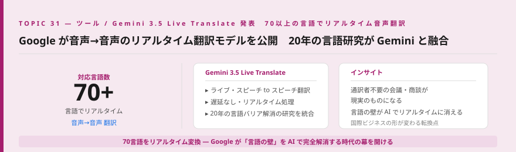
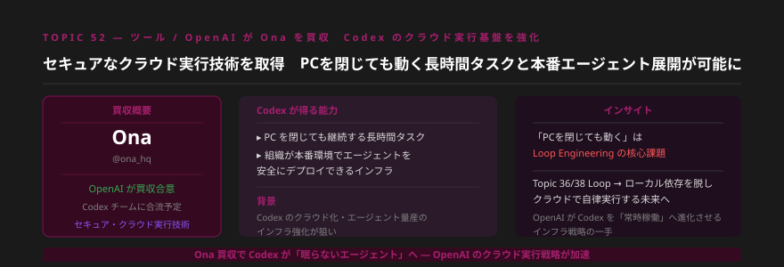
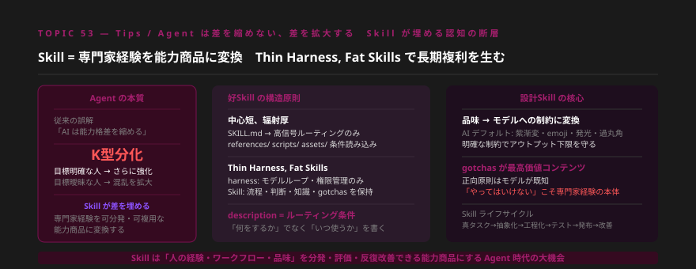
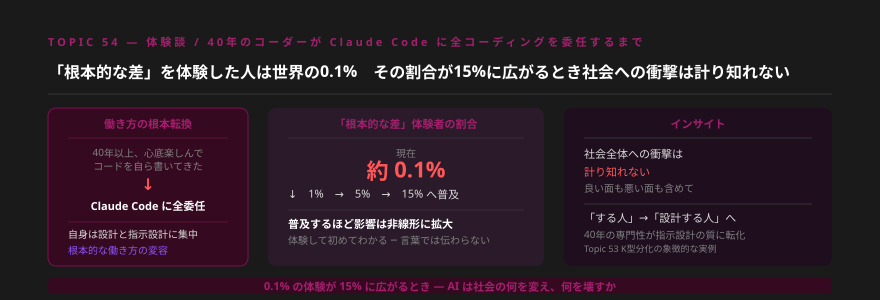

- AnthropicがClaude Fable 5（Mythosクラス）を6月9日に正式公開。ソフトウェア開発・科学研究・ナレッジワーク・ビジョンの4領域で業界最高水準を達成し、全有料プランで即日利用可能に。NotionもBusiness・Enterpriseプランへの即採用を発表した。
- Loop EngineeringとHarness Engineeringが「2026年のAI活用の核心規律」として確立。「プロンプトを書く時代」から「ループと制約を設計する時代」への根本的パラダイムシフトが頭部ユーザーの間で共通認識となった。Fable 5への指示も、作業契約7項目の骨格なしでは能力を引き出せない。
- GoogleがGemini 3.5 Live Translateで70言語のリアルタイム音声翻訳を公開、OpenAIはOna買収でCodexのクラウド実行基盤を強化。「AIが常時稼働するインフラ」の整備が加速するなか、Agentが能力差を縮めるのではなく拡大するというK型分化の現実も、各所で語られ始めた。
Topic 01 — 考察 「3分でシステムが完成した」― 調達して作るはずだったものが消えた日

何が起きたか
ある経営者が、数ヶ月かけて資金調達し開発チームを組んで作ろうとしていたシステムを、Claudeで試したところ3分で完成させてしまった。「社長、株主に説明する頃合いです。調達して作るはずだったシステムがClaudeで3分で完成した件について」という言葉とともにこの体験が拡散し、多くの経営者・投資家・開発者に衝撃を与えた。システム開発にかかる時間・コスト・人員という前提が根本から崩壊しつつあることを示す、象徴的な出来事となった。
噛み砕くと
「システムを作ること」の希少性・価値が急速にゼロへ向かっています。これは「開発者が不要になる」という話ではなく、「何を作るか」の判断と設計に価値が移行している、ということです。資金調達→開発チーム→数ヶ月というサイクルは、「Claudeで3分」という現実の前で意味を失いつつあります。株主に説明すべきは「3分で作れた事実」ではなく、「では次に何を作るか」という問いへの答えです。
クライアントが「システム開発のために予算を確保したい」と言ったとき、まず「Claudeで3分のプロトタイプを作ってみましょう」と提案できることが、コンサルタントの新しい差別化になります。「まず試作してから投資を判断する」フローへの転換支援こそが、AI時代のコンサルティングの入口です。過去に外注・内製した業務システムのリストを見直し、「今ならAIで作れるか」を試算する習慣を今週から始めましょう。
明日から使える業務活用
- クライアントが「システム開発のために予算を確保したい」と言ったら、まずClaudeで試作品を作って見せることを提案する
- 過去に外注・内製で作ったシステムのリストを作り、「今ならAIで何分でできるか」を試算する
- 「3分システム完成」の事例を社内勉強会・提案書の導入事例として積極的に活用する
Topic 02 — AIモデル / Anthropic Claude Fable 5 正式公開 ― Mythosクラス・史上最高性能が全プランで即日解放

何が起きたか
AnthropicがClaude Fable 5を2026年6月9日に正式公開した。同社が「Mythosクラス」と位置づける史上最高性能の公開モデルであり、（1）ソフトウェアエンジニアリング、（2）科学研究、（3）ナレッジワーク、（4）ビジョン（画像理解）の4領域で業界最高水準を達成。全有料プラン・Claude Code・Claude API・主要クラウドプラットフォーム（AWS・GCP等）で即日利用可能となった。Notion Business・EnterpriseプランへのFable 5即採用も発表され、Notionの内部ベンチマークでは困難な多段階タスクで過去最高スコアを記録している。GPT-5との正面対決も本格化している。
噛み砕くと
「安全に使える最高のAIモデル」が全有料プランで即日解放されました。これまで研究用最上位モデルと製品の間にあった壁が消えた瞬間です。NotionのようなメジャーSaaSが即採用したという事実は、Fable 5の多段階タスク処理能力が実務水準を超えていることを示しています。今週からコーディング・分析・長文生成のすべてにおいて、使えるAIの上限が一段引き上げられました。
Claude Fable 5は、コンサルティング業務の「最上位タスク」——複雑な調査・多段階分析・専門分野の知識統合——において、従来モデルを大幅に上回る可能性があります。まず自分の最も複雑な業務にFable 5を当ててみて、以前との差を数値で記録することが最初のステップです。そのパフォーマンス差の実感が、クライアントへの「AI活用支援」提案の説得力に直結します。
明日から使える業務活用
- Claude Proプランに加入済みの方はFable 5に切り替えて、普段最も時間のかかる業務で試してみる
- Notionのビジネスプランを利用中のチームに「Fable 5の多段階タスク機能」を試してもらい、業務効率化の事例をまとめる
- 「Fable 5をいつ使うべきか」——どんなタスクに最適か——の選定基準をチームで共有するドキュメントを1枚作る
Topic 03 — エンジニアリング Loop Engineering 完全解説 ― 「指示する時代」から「ループを設計する時代」へ

何が起きたか
OpenClaw（元Anthropic）CEOのPeter LevinsonとClaude CodeのエンジニアリングリードであるBoris Chernyが、AIエージェントの次のパラダイムとして「Loop Engineering」を体系化した。従来の「あなた→指示→AI→出力→レビュー」から「ゴール設定→ループ実行→完了」への根本転換を提唱している。
ループの6構成要素は：①Automations（/goal /loop コマンド群）、②Worktrees（並列エージェントのファイル衝突防止）、③Skills（プロジェクト知識の毎回再利用）、④Plugins/Connectors（実ツールへの接続）、⑤Subagents（作る者と検証する者の分離）、⑥Memory（ループ間の記憶の永続化）。Claude CodeもCodexも全6要素を実装済みだ。コスト面では1回のループで50K〜200Kトークン、フリートループで〜200万トークン規模となり、DeepSeek V4の活用が経済合理性の鍵とされている。
噛み砕くと
「AIに指示を出す」時代が終わりつつあります。次は「AIがループの中で自律的に作業し、人間はゴールと制約を設定するだけ」という時代です。プロンプトエンジニア（PE）からループエンジニア（LE）への転換が、2026年のAI活用の中核的スキルシフトです。「1つの信頼できるループは1,000の完璧なプロンプトに勝る」という原則が、頭部ユーザーの間で共通認識になっています。
ループエンジニアリングは「やり方の習得」より「設計力の習得」が重要です。目標の明確化・停止条件の設定・検証ループの設計——これらは本質的にコンサルタントが日常業務でやっていることと重なります。まず自分の繰り返し作業（週次レポート・定期調査・データ集計など）を1つ選んで /loop で実験し、「どこでループが止まるか」を観察することが最短の学習経路です。
明日から使える業務活用
- Claude Codeで繰り返し行っているタスクを1つ選び、/goalでゴールを設定してループを回してみる
- /loopコマンドを試して、完了・停止・継続の判断がどう行われるかを観察し、記録する
- 「ループ設計シート」（ゴール・停止条件・検証方法・使用ツール）をテンプレート化してチームで共有する
Topic 04 — エンジニアリング Harness Engineering ― 同じモデルでも設計次第で性能が変わる2026年の核心規律

何が起きたか
OpenAI・Anthropic・ThoughtWorksが独立に同じ結論に到達した：「Agent = Model + Harness」という原則だ。HarnessとはModelを動かすOS的な外層環境のこと。LangChainのTerminal Bench 2.0では、同じモデルでもHarness変更だけで52.8%→66.5%に性能が向上。Vercelは逆に「ツールを80%削除することで性能が向上した」と報告している。
Harnessの5要素として①CLAUDE.md/AGENT.mdの整備、②JSONフィーチャーリスト（進捗トラッカー兼テストスイート）、③セッション初期化ルーティン（7ステップ）、④スプリント契約（計画エージェントが先行）、⑤構造化タスクテンプレートが挙げられる。また「Harness Decay」の概念も重要で、Opus 4.5→4.6への進化でスプリント分解が不要になりコスト38%削減を達成した事例も報告されている。3社が収束した5原則：コンテキスト優先・計画と実行の分離・フィードバック必須・1つずつ・リポジトリが文書。
噛み砕くと
「最高のモデルを使うこと」より「最高のHarnessを設計すること」が、2026年のAI活用の勝負どころです。同じFable 5でも、Harnessが良ければ遥かに良い結果が出ます。そして重要なのは「作ること」と同じくらい「削除すること」。モデルが賢くなるほど不要なHarnessが生まれるため、定期的なメンテナンスが必要になります。
Harness EngineeringはCLAUDE.mdの整備から始めるのが最小コスト・最大効果の第一歩です。プロジェクトの文脈・ルール・禁止事項・ツール一覧をCLAUDE.mdに書いておくだけで、毎回のセッションの立ち上がり品質が劇的に向上します。「最高のコードより最高の制約を設計せよ」——この原則をチームのAI活用ガイドラインの中心に据えましょう。また月1回の「Harness Decay点検」として、どの設定が今も必要かを棚卸しする習慣も重要です。
明日から使える業務活用
- プロジェクトのCLAUDE.mdを作成または更新する（なければ30分で作れる）
- ツール一覧を見直し「本当に必要かどうか」を問い直す——多すぎるツールはHarnessの重荷
- 月1回「どの設定・ルールが今も必要か」を棚卸しするHarness Decay点検をカレンダーに入れる
Topic 05 — Tips / Anthropic Fable 5時代の「作業契約」7項目 ― プロンプトの語尾より骨格を渡せ

何が起きたか
Anthropic公式ベストプラクティスをもとに、Claude Fable 5時代の長時間タスク向けプロンプト設計フレームワークが整理された。核心的な発想転換は「きれいな命令文を書く」から「作業契約を渡す」へ。7項目とは①目的、②成果物、③制約、④良い例/悪い例、⑤構造（XML）、⑥検証方法、⑦進捗報告。
最重要とされるのが停止条件——「前提不足なら推測で進めず質問する」という指示だ。長時間タスクほど停止条件が命綱となり、「最後まで正しく間違えた成果物」を防ぐ仕組みとして機能する。Anthropic公式は「明確な指示・例の提示・XML構造化・検証手段を渡すこと」を推奨している。
噛み砕くと
Fable 5が賢くなったほど、あいまいな指示で動かすと「自信を持って間違った方向に突き進む」リスクが増えます。「言い回し」を磨くより「骨格を整える」ことが重要です。7項目の作業契約を渡すことで、Fable 5の能力が初めてフルに引き出せます。特に停止条件は「前提が足りなければ止まる」という安全装置であり、長時間タスクでは最優先で設定すべき項目です。
この7項目フレームワークは、AIへの指示だけでなくクライアントへの提案書・業務指示書・外注委託書の構成としても優秀です。「目的・成果物・制約・例・構造・検証・報告」という骨格は、人間同士のコミュニケーション品質も引き上げます。まずFable 5への指示に適用して習慣化し、その後クライアントとのやり取りにも応用しましょう。
明日から使える業務活用
- 次にFable 5に大きなタスクを依頼するとき、7項目チェックリストを使って指示文を構成する
- 「前提が不明な場合は作業を止めて質問してください」という停止条件を必ず入れる習慣を今日から始める
- 自分がよく依頼するタスク（レポート作成・コード生成・翻訳など）用の7項目テンプレートを1本作成する
Topic 06 — Tips 開発経験ゼロで土曜に始め月曜に公開 ― Claude Code 完全初心者ガイド

何が起きたか
コードが一切読めないビジネスパーソン（@eng_khairallah1）が、土曜の朝にClaude Codeを初めて開き、日曜夕方にはVercelでアプリを公開した。その後3週間でさらに4つのアプリを出荷。5つの典型的な失敗と12のルールが実録として公開された。主な失敗パターン：計画なしで始める、全機能を一度に作ろうとする、CLAUDE.mdを作らない、言葉でビジュアルを説明しようとする——など。主なルール：毎回Plan Modeから始める、機能ごとに会話をリセット、CLAUDE.mdをDay1で作る、ビジュアルはスクリーンショットで伝える、完璧でなくていい・まず出荷する。著者の自己定義：「あなた＝PM、Claude＝エンジニア」。
噛み砕くと
コードが読めないことはもはや言い訳になりません。この実録が示すのは「初日のつまずきは全員共通で、乗り越え方にはパターンがある」ということです。2日でアプリを公開し、3週間で4本追加した事例は、「エンジニアを雇う」という選択肢より速く・安く動けることを証明しています。
クライアントに「AIで何か作れますか？」と聞かれたとき、「試作品を2日で作ってみます」と答えられるスキルは、コンサルタントとして強力な差別化になります。この12ルールをチームの「Claude Code入門セット」として整備し、非エンジニアメンバーが最初の1週間でつまずかないようにしておくことが、チーム全体のAI活用レベルを底上げする最短経路です。
明日から使える業務活用
- 今週末、CLAUDE.mdの書き方を覚えてプロジェクト用のCLAUDE.mdを1つ作る
- 「作りたいもの」を1つ決めて、Plan Mode（Shift+Tab）からスタートする
- 完成度60%でいいから、まず動くものをVercelか同等サービスで公開してみる
Topic 07 — ツール / Google Gemini 3.5 Live Translate ― 70言語でリアルタイム音声翻訳、言語の壁が消える

何が起きたか
GoogleがGemini 3.5 Live Translateを発表した。70以上の言語でリアルタイムの音声→音声翻訳を実現するモデルで、20年間のGoogle翻訳・言語バリア解消研究の成果がGeminiに統合された。単なるテキスト翻訳ではなく、話者の声のトーン・リズム・ピッチを保持したまま翻訳し、自動ノイズフィルタリング・イヤピースモード（片耳で聴きながら会話できる）にも対応。Gemini Live APIを通じて開発者が自アプリに組み込むことも可能で、自動言語検出機能も持つ。
噛み砕くと
「通訳が必要な会議」「英語が苦手な商談」がリアルタイムで解消される時代が始まります。声のトーンやリズムまで保持する翻訳は、単なる「意味の変換」を超えて「人格ごと翻訳する」レベルに近づいています。言語スキルの格差が商談結果に直結していた時代が、着実に終わりを迎えつつあります。
Gemini Live Translateは、語学力ではなく「業務知識と判断力」で勝負できる環境を作ります。外国語での提案・交渉にハードルを感じていたコンサルタントにとって国際案件への参入障壁が下がる一方、「語学力が付加価値だった」ポジションは逆風になります。今から「語学力ではなく、何で差別化するか」を考えておく必要があります。英語情報へのアクセスが容易になった分、情報の解釈・判断・適用力が差別化になります。
明日から使える業務活用
- Gemini Live Translateを試して、外国語の会議・音声コンテンツをリアルタイムで理解する体験をする
- 英語の業界ニュース・ポッドキャストをGemini Live Translateで聴き、情報収集速度を上げる
- 「翻訳が必要な業務」リストを作り、Gemini Live Translateで代替できるか評価する
Topic 08 — ツール / OpenAI OpenAI が Ona を買収 ― PCを閉じても動く Codex のクラウド実行基盤が整う

何が起きたか
OpenAIがセキュアなクラウド実行技術を持つスタートアップOna（@ona_hq）の買収に合意した。Onaの技術はCodexが「PCを閉じていても継続する長時間タスク」を実行できるようにし、組織が本番環境でエージェントを安全にデプロイできるインフラを提供する。買収完了後、OnaチームはOpenAIのCodexチームに合流する予定。OpenAIはこの買収をCodexのクラウド化・常時稼働化の重要な一手と位置づけている。
噛み砕くと
「PCを閉じたままでもAIが働き続ける」インフラの争奪戦が始まっています。ローカル環境に依存するエージェントは、ユーザーがPCを使っている間しか動けません。Onaの技術はこの制約を取り除き、Codexを「常時稼働するAIワーカー」へ進化させます。本号のLoop EngineeringとHarness Engineeringで描いた「ループを常時回し続ける」という方向性と、この買収は完全に一致しています。
「エージェントがクラウドで常時稼働する」世界では、コンサルの仕事の範囲が変わります。今は「AIに任せた後、自分が確認して次の指示を出す」サイクルが主流ですが、これが「エージェントが判断・実行・報告をクラウドで完結させ、人間は週次で結果を見るだけ」に移行します。「何をエージェントに委任し、何を人間が判断するか」という役割設計の能力が、次世代のコンサルスキルの核になります。
明日から使える業務活用
- 「PC起動中しかできない作業」と「クラウドで完結させたい作業」を区分けしてリスト化する
- Codexのスケジュール実行機能を試して、定期実行ワークフローの設計を始める
- 「夜間・週末にエージェントが稼働していたら何ができるか」を1案考えておく
Topic 09 — Tips / 考察 Skillは「能力商品」― Agent時代のK型分化と Thin Harness, Fat Skills

何が起きたか
複数の爆款（バズ）Skillを制作した開発者が、Skill設計の本質についての考察を発表した。核心的主張は「AgentはK型分化をもたらす——能力の差を縮めるのではなく拡大する」。目標が明確で文脈を持つ人はさらに強化され、目標が曖昧で文脈がない人は混乱を拡大される。
Skillの定義は「専門家経験・ワークフロー・品味・ツール呼び出しを再利用可能・分発可能な能力単位に変換したもの」。アーキテクチャ原則は「中心短、辐射厚（SKILL.mdは高信号ルーティングのみ、詳細はreferences/scripts/assetsへ条件読み込み）」と「Thin Harness, Fat Skills」。descriptionはルーティング条件として機能させること（「何をするか」ではなく「いつ使うか」を書く）、gotchasが最も高価値なコンテンツであること、完全自動生成は初稿にしかならないことも論じられた。
噛み砕くと
「AIが皆を平等にする」は誤りです。「目標が明確で文脈を持つ人をさらに強化する」のがAgentの本質です。Skillは、頭部ユーザーが検証済みの能力を一般ユーザーが使えるようにする橋渡しです。大事なのは「どんな経験をSkillに変換するか」——それはあなた自身の専門知識、業界経験、そして失敗事例です。
コンサルタントは「業界の暗黙知・失敗事例・判断基準」を大量に持っています。これをSkillに変換できれば、「あなたがいなくても動くコンサルプロセス」を作れます。今すぐできるのは、自分がよくやる分析・提案・レビューのプロセスを1つ選んで、gotchasとともにSKILL.md形式で文書化すること。それが最初の「能力商品」になります。
明日から使える業務活用
- 自分の業務で「毎回同じ流れで行っている作業」を1つ特定し、SKILL.mdとして書き出す
- gotchasリストを作る：「この作業でよくある失敗・盲点・絶対にやってはいけないこと」を5つ書く
- 作成したSkillをClaude CodeにインストールしてSkillが正しく起動するか確認する
Topic 10 — 体験談 / 考察 40年書いてきたコードを、Claude Codeに全委任した ― 0.1%の体験が広がるとき

何が起きたか
40年以上にわたってコードを書くことを心底楽しんできたあるニュースレター著者が、過去半年でコーディングスタイルを根本的に変えたと語った。現在はすべてのコーディングをClaude Codeに委任し、自身は設計と指示設計に集中している。この変容を体験した人はまだ世界人口の約0.1%に過ぎず、その割合が0.1%→1%→5%→15%と広がるにつれて、社会全体への影響は計り知れないと述べた。「良い面も悪い面も含めて」という言葉も添えられた。
噛み砕くと
「40年コードを書いてきた人が、心から楽しんできたことをAIに委任した」という事実の重さは、「AI便利」という話を超えています。これはアイデンティティの変容であり、専門性の再定義です。0.1%の体験者が15%になるとき、「私は何者か」という問いを、あらゆる職種の人が迫られます。プログラマーだけでなく、コンサルタント、デザイナー、教師、医師——すべての「専門職」が同じ問いに直面します。
この体験談には、コンサルとして伝えるべき最重要メッセージが凝縮されています——「AIは仕事を奪うのではなく、仕事の定義を変える」。40年の専門性は消えていない。それが「コードを書く能力」から「何を作るかを設計する能力」へと転化された。クライアントとの対話で「あなたの専門性は何に転化されますか？」という問いを使いましょう。それが次のプロジェクトの入口になります。
明日から使える業務活用
- 自分の専門業務の中で「AIに委任できる作業」と「自分でしか判断できないこと」を書き出す
- 「AIに委任した後、自分は何に時間を使うか」を明文化する——これが次の専門性の種になる
- クライアントとの対話で「あなたの業務のうち、AIに任せたら喜びますか？それとも寂しいですか？」と問いかけてみる
今週のまとめ ― Fable 5 時代の幕開け、そして分化が始まる
今週は「Claude Fable 5という最高性能モデルが手に入った」というニュースと、「それを使いこなすための設計思想（Loop Engineering・Harness Engineering・作業契約・Skill）」が同時に整理された週でした。モデルが強くなっても、使い方の骨格がなければ能力は引き出せません。
AgentはK型分化をもたらす——目標が明確で文脈を持つ人はさらに強化され、そうでない人は混乱が拡大する。40年コードを書いてきた人がClaude Codeに全委任したという体験談は、この変化がすでに現実として起きていることを示しています。0.1%の体験者が15%になる過程で、今週学んだことを1つでも実践した人が「分化する側」に踏みとどまります。
| # | 今週の最優先アクション | 難易度・目安時間 |
|---|---|---|
| 1 | Claude Fable 5に切り替えて、最も複雑な業務で使い品質差を記録する | ★☆☆ 10分 |
| 2 | プロジェクトのCLAUDE.mdを作成または更新する（Harness Engineering第一歩） | ★★☆ 30分 |
| 3 | 7項目の作業契約フレームワークを使って次のFable 5へのタスクを組み立てる | ★★☆ 20分 |
| 4 | /goalコマンドでループを1回試し、どこで止まるかを観察・記録する | ★★☆ 15分 |
| 5 | 「自分の専門業務でAIに委任できる作業」と「自分で判断すべきこと」のリストを作る | ★★☆ 20分 |